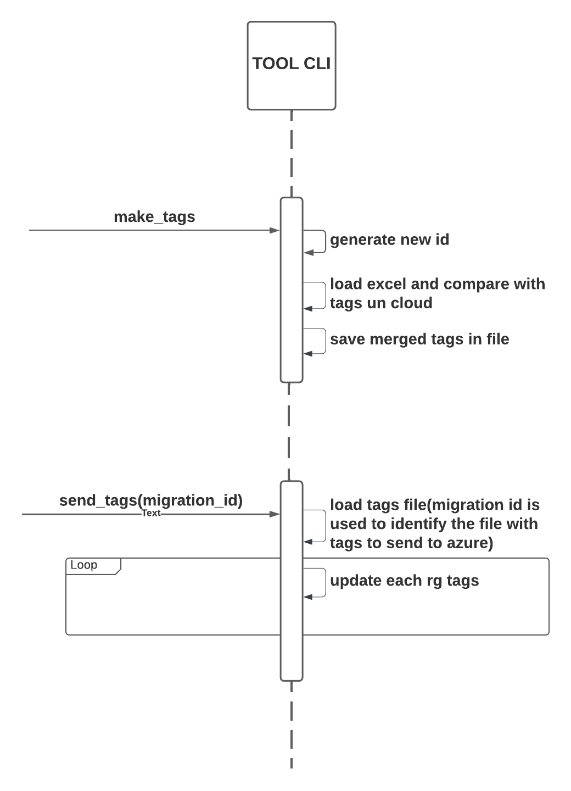

AZURE MASSIVE TAGGING CLI TOOL¶
Esta herramienta tiene el objetivo de crear tags a los grupos de recursos listados en un excel
| name | tag 1 | tag 2 | .... tag n |
|---|---|---|---|
| rg 1 | val1 | va2 | val3 |
| rg 2 | val1 | va2 | val3 |
| rg 3 | val1 | va2 | val3 |
Requisitos¶
- Python3
- Librerías de python: Las librerías de python requeridas están listadas en el archivo
requirements.txt - Requisitos de autenticación:
- (opcional) Un archivo con los accesos de un service principal, con la siguiente estructura. Lo necesitas solo si quieres autenticarte en azure de esta forma.
- (opcional) AZ CLI Con sesión activa, lo necesitas solo si quieres autenticarte por este medio.
Cómo funciona la herramienta¶
La herramienta funciona en dos partes, esto con el objetivo de poder validar los tags finales que se enviaran al cloud antes, y disminuir el riesgo de errores.
A continuación un diagrama de flujo de alto nivel del flujo de la aplicación.

Paso 1 Make Tags¶
El primer paso es ejecutar make_tags en este paso se recorre el excel y por cada grupo de recursos se consultan sus tags en el cloud y se mezclan con los tags del excel, para ser guardados posteriormente en un archivo nombrado con un identificador único migration_id con el siguiente formato: migrations/tags-{{migration_id}}.json.
La salida de este paso es el migration_id el cual usarás en el siguiente paso.
Paso 2 Send Tags¶
El segundo paso es ejecutar send_tags en este paso se debe especificar el migration_id del paso anterior.
Importante Recuerda que antes debes validar el archivo con los tags finales que se enviarán al cloud y verificar que es correcto, en caso contrario trata de identificar el error, solucionarlo y crear una nueva migración.
Cómo ejecutar la herramienta¶
Hay dos formas de ejecutar la herramienta.
Argumentos como parámetro de la CLI¶
Aqui un pequeño ejemplo:
# Paso 1: Generar archivo de migración
python manage.py make_tags --excel-path ./inputs/TAGULTI.xlsx --excel-sheet Hoja1 --tags TRIBU:Tribu DATE:Date ID:Mail OWNER:Owner --subscription-id b2fd9f8c-0ed5-4f6e-9c93-75ae90718afa --az-manager-type SDK --az-credentials-file .az_credentials.json
Making Tags 20220330102531
See logs in logs/20220330102531.log
Progress |████████████████████████████████████████████████████████████████████████████████████████████████████| 100.0% Complete
See made tags in tags-20220330102531.json file
Paso 2: Enviar Tags a AZURE(Especificar el id de la migración generada en el paso anterior *migration_id*)
informatica@rami802288-11:~/dev/p$
python manage.py send_tags --subscription-id b2fd9f8c-0ed5-4f6e-9c93-75ae90718afa --azure-manager-type SDK --migration-id 20220330102531
Sending Tags 20220330102531
█████████████████████████████████████████████████████-| 100% Complete
Para ver la documentación de cada comando envía la opción --help
python manage.y make_tags --help # Para ver la doc de MAKE TAGS
python manage.y send_tags --help # Para ver la doc de SEND TAGS
Pasar argumentos en un JSON de la CLI¶
Esta forma de ejecutar la CLI es más organizada y funciona de la siguiente forma:
python manage.py make_tags ./make_tags_params.json
Making Tags 20220330102531
See logs in logs/20220330102531.log
Progress |████████████████████████████████████████████████████████████████████████████████████████████████████| 100.0% Complete
See made tags in tags-20220330102531.json file
python manage.py send ./send_tags_params.json
Sending Tags 20220330102531
█████████████████████████████████████████████████████-| 100% Complete
El archivo make_tags_params.json debe tener la siguiente estructura:
{
"excel_path":"./inputs/TAGULTI.xlsx",
"excel_sheet": "Hoja1",
"tags":{
//"Nombre de la columna en excel": "Cómo va a quedar en el cloud"
"TRIBU":"Tribu", // Columna Excel : Tag Name
"DATE":"Date",
"ID":"Mail",
"OWNER":"Owner"
},
"subscription_id": "b2fd9f8c-0ed5-4f6e-9c93-75ae90718afa",
"az_manager_type": "API", // API / SDK
"az_auth_method": "TOKEN",//TOKEN / CLI
"az_credentials_file":".az_credentials.json", // Si eligió TOKEN en auth_method, debe especificar el archivo con las credenciales(Es un service principal)
"extra_fields": ["location"] // Opcional
}
El archivo send_tags_params.json debe tener la siguiente estructura:
{
"migration_id": "20220329143907", // El id de los tags que quiere enviar a azure
"subscription_id": "b2fd9f8c-0ed5-4f6e-9c93-75ae90718afa",
"az_manager_type": "API", // API / SDK
"az_auth_method": "TOKEN",//TOKEN / CLI
"az_credentials_file":".az_credentials.json",// Si eligió TOKEN en auth_method, debe especificar el archivo con las credenciales(Es un service principal)
"enter_step": true // Opcional
}